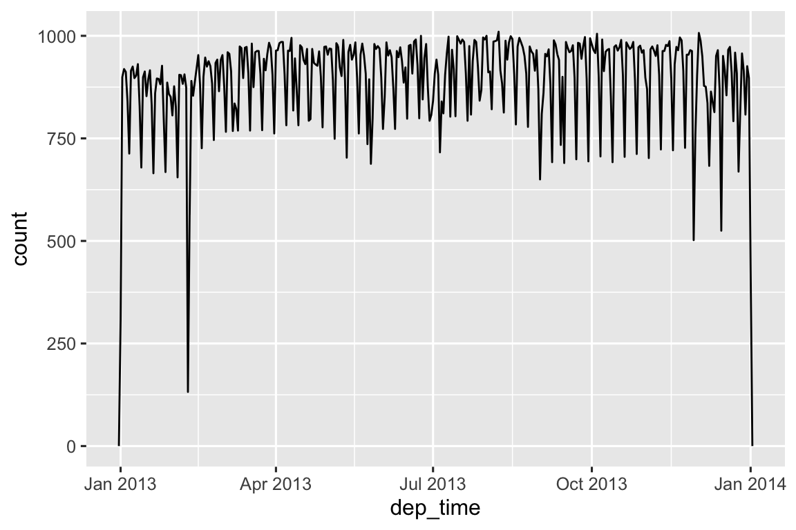
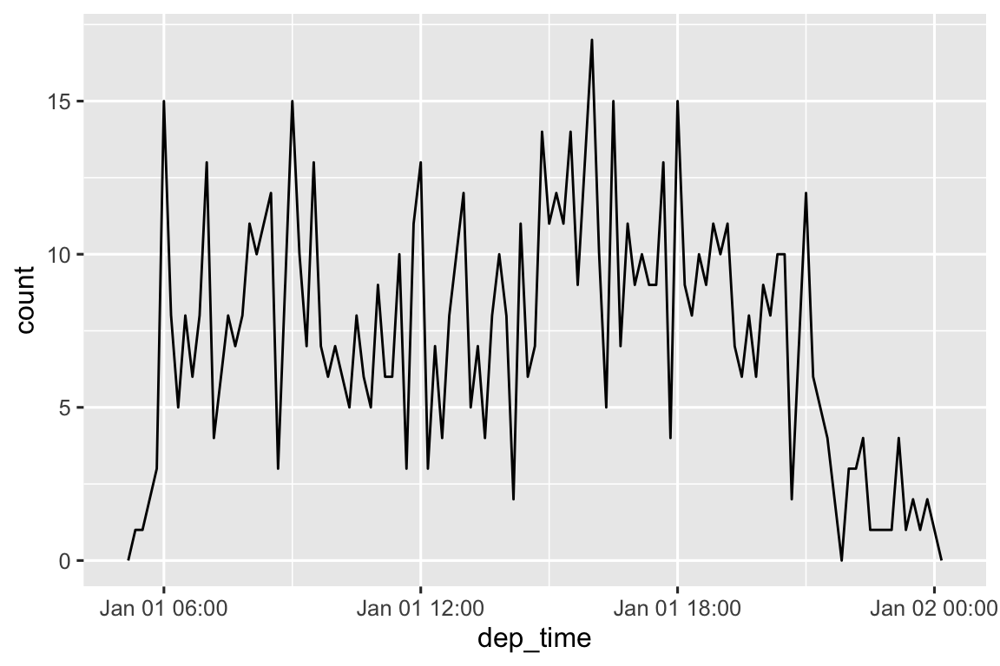
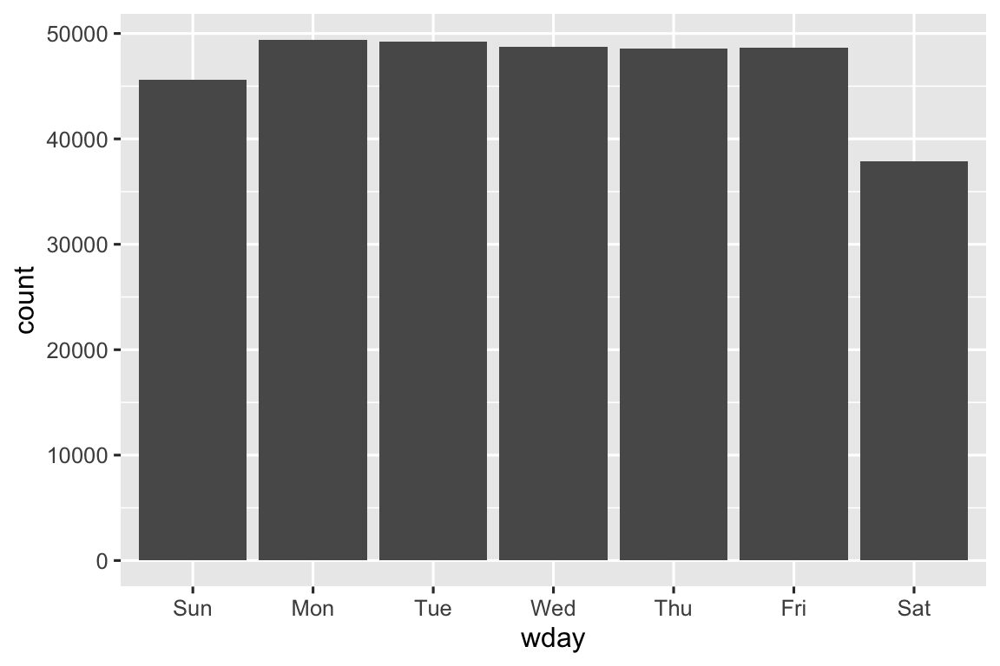
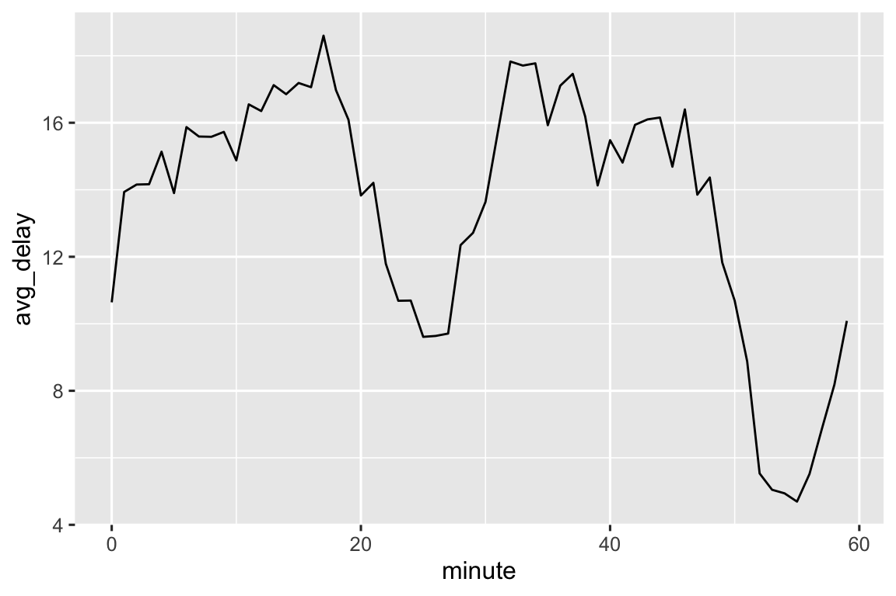
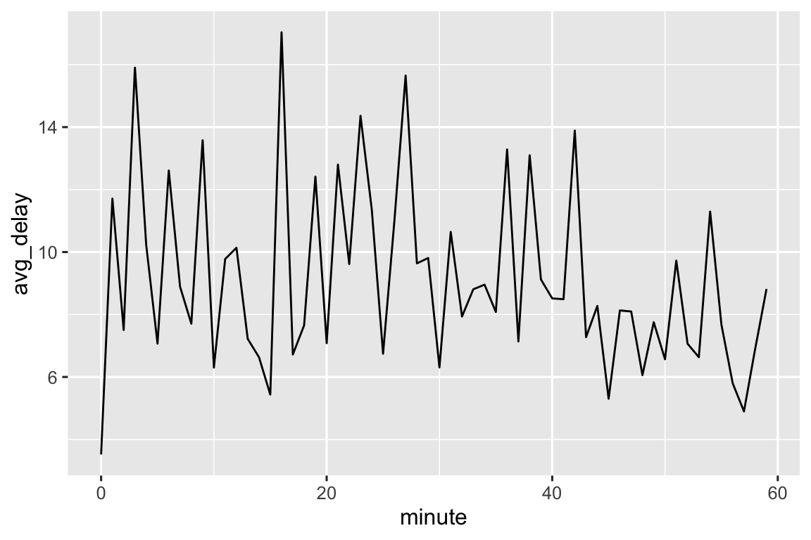
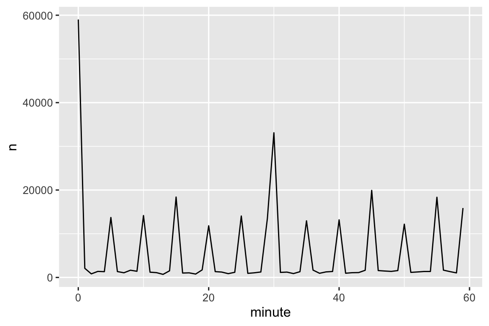
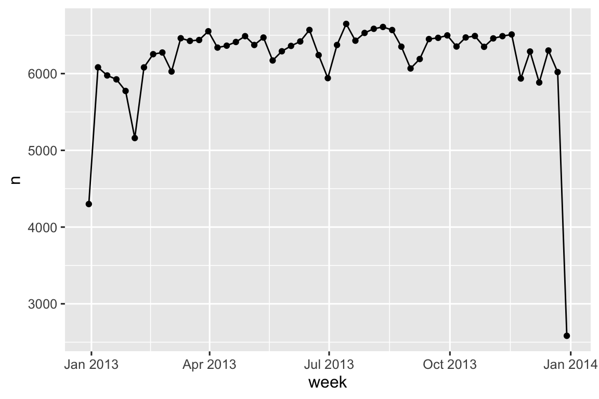
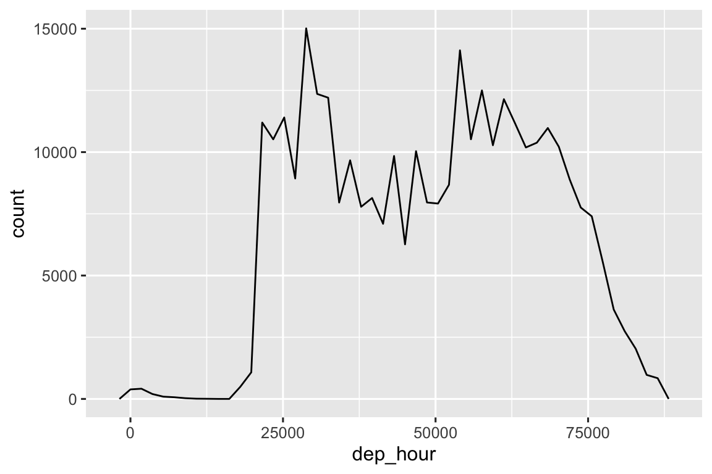
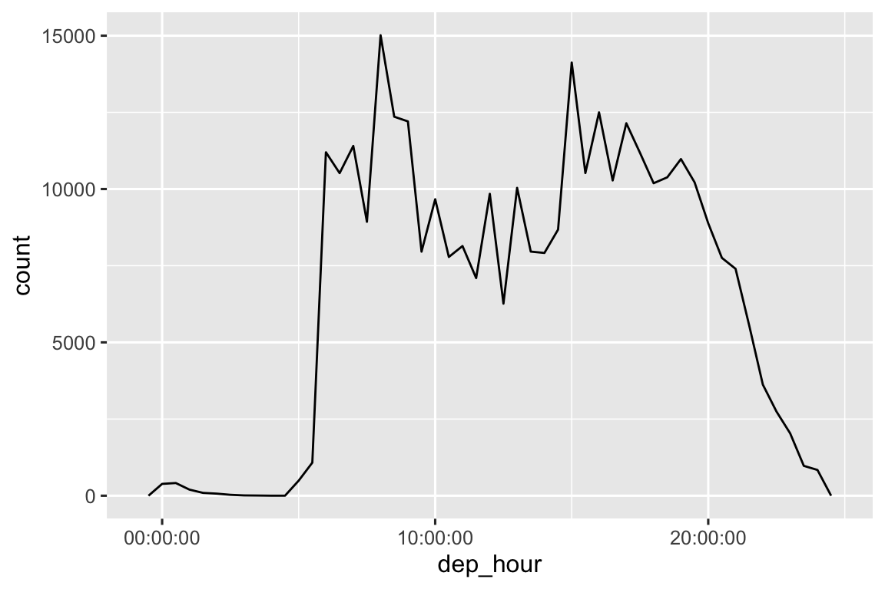

library(tidyverse)
library(nycflights13)17 日期和时间
17.1 引言
本章将向你展示如何在R中处理日期和时间。乍 一看，日期和时间似乎很简单，在日常生活中会经常使用它们，似乎并不会引起太多混淆。然 而，你对日期和时间了解得越多，它们似乎就变得越复杂！
为了预热，请思考一年中有多少天，一天中有多少小时。你 可能记得大多数年份有365天，但闰年有366天。你 知道确定某年是否为闰年的完整规则吗？一 天中的小时数就不太明显了：大多数日子有24小时，但在使用夏令时（DST）的地方，每年有一天是23小时，另一天是25小时。
日期和时间之所以难以处理，是因为它们必须协调两种物理现象（地球的自转和绕太阳的公转）以及包括月份、时区和夏令时在内的一系列地缘政治现象。本 章不会告诉你关于日期和时间的每一个细节，但将为你提供扎实的实践技能基础，帮助你应对常见的数据分析挑战。
我们将首先向你展示如何从各种输入中创建日期-时间；一旦你有了日期-时间，你就可以提取诸如年、月和日等组件。接 下来，我们将深入探讨处理时间跨度的棘手话题，根据你要做的事情不同，时间跨度会有各种各样的形式。最 后，我们将简要讨论时区带来的额外挑战。
17.1.1 必要条件
本章将重点关注lubridate包，它使在R中处理日期和时间变得更加容易。在 最新的 tidyverse 发行版中，lubridate 是核心包tidyverse的一部分。我 们还将需要nycflights13数据集作为练习数据。
17.2 创建日期/时间
有三种日期/时间数据类型，它们指的都是时间的一个瞬间：
日期（date）：Tibbles 输出为
<date>。时间（time）：Tibbles 输出为
<time>。日期-时间（date-time）：日期加上时间，唯一地标识了一个瞬时时间（通常精确到秒）。T ibbles 输出为
<dttm>。B ase R将这些称为 POSIXct，但这个名称并不是很好说。
在本章中，我们将重点关注日期和日期-时间，因为 R 没有用于存储时间的原生类。如 果你需要这样的类，你可以使用 hms 包。
你应该始终使用最简单的可能满足你需求的数据类型。这 意味着，如果你可以使用日期而不是日期-时间，那么你就应该这样做。日 期-时间要复杂得多，因为需要处理时区，我们将在本章末尾再讨论这个问题。
要获取当前日期或日期-时间，你可以使用today()或now()：
today()
#> [1] "2024-10-20"
now()
#> [1] "2024-10-20 23:19:18 UTC"另外，下面的部分描述了你可能创建日期/时间的四种方法:
- 在使用readr读取文件时；
- 从字符串；
- 从单个日期-时间组件；
- 从现有的日期-时间对象。
17.2.1 During import
如果你的CSV文件包含ISO8601日期或日期-时间，则不需要做任何操作，readr会自动识别它:
csv <- "
date,datetime
2022-01-02,2022-01-02 05:12
"
read_csv(csv)
#> # A tibble: 1 × 2
#> date datetime
#> <date> <dttm>
#> 1 2022-01-02 2022-01-02 05:12:00可能你之前没听说过 ISO8601，它是一种国际日期编写标准，其中日期的组成部分按照从大到小的顺序用短横线（-）分隔。例 如，在 ISO8601 中，2022年5月3日写作 2022-05-03。I SO8601日期还可以包含时间，其中小时、分钟和秒用冒号:分隔，日期和时间组件用 T 或空格分隔。例 如，你可以将 2022年5月3日下午4点26分写作2022-05-03 16:26 或 2022-05-03T16:26。
对于其他日期-时间格式，你需要使用col_types加上col_date()或col_datetime()以及一个日期-时间格式。r eadr使用的日期时间格式是许多编程语言通用的标准，使用%后跟一个单字符来描述日期组件。例 如，%Y-%m-%d指定了一个格式为年-月（数字）-日的日期。@ tbl-date-formats 列出了所有选项。
| 类型 | 代码 | 意义 | 实例 |
|---|---|---|---|
| 年 | %Y |
4 位数 年 | 2021 |
%y |
2 位数 年 | 21 | |
| 月 | %m |
数字 | 2 |
%b |
缩写名 | Feb | |
%B |
全名 | February | |
| 日 | %d |
一个或两个数字 | 2 |
%e |
两个数字 | 02 | |
| 时间 | %H |
24-小时 小时 | 13 |
%I |
12-小时 小时 | 1 | |
%p |
AM/PM | pm | |
%M |
分钟 | 35 | |
%S |
秒 | 45 | |
%OS |
带有小数的秒 | 45.35 | |
%Z |
时区名称 | America/Chicago | |
%z |
UTC偏移量 | +0800 | |
| 其他 | %. |
跳过一个非数字 | : |
%* |
跳过任何非数字的数字 |
下面这段代码展示了几个应用于一个非常模糊的日期的选项:
And this code shows a few options applied to a very ambiguous date:
csv <- "
date
01/02/15
"
read_csv(csv, col_types = cols(date = col_date("%m/%d/%y")))
#> # A tibble: 1 × 1
#> date
#> <date>
#> 1 2015-01-02
read_csv(csv, col_types = cols(date = col_date("%d/%m/%y")))
#> # A tibble: 1 × 1
#> date
#> <date>
#> 1 2015-02-01
read_csv(csv, col_types = cols(date = col_date("%y/%m/%d")))
#> # A tibble: 1 × 1
#> date
#> <date>
#> 1 2001-02-15注意，无论你如何指定日期格式，一旦将日期导入 R 中，它总是以相同的方式显示。
如果您使用%b或%B并处理非英语日期，您还需要提供一个locale()。请 查看date_names_langs()中的内置语言列表，或者使用date_names()创建您自己的语言设置。
17.2.2 从字符串
日期-时间规范语言功能强大，但需要仔细分析日期格式。另 一种方法是使用 lubridate 的辅助函数，这些函数尝试在你指定组件顺序后自动确定格式。要 使用它们，请确定年、月和日等组件在日期中出现的顺序，然后按照相同的顺序排列 “y”、“m” 和 “d”。这 将给出可用于解析日期的 lubridate 函数的名称。例 如：
ymd("2017-01-31")
#> [1] "2017-01-31"
mdy("January 31st, 2017")
#> [1] "2017-01-31"
dmy("31-Jan-2017")
#> [1] "2017-01-31"ymd()及其相关函数用于创建日期。要 创建日期-时间，请在解析函数名称后添加一个下划线和一个或多个 “h”、“m” 和 “s”：
ymd_hms("2017-01-31 20:11:59")
#> [1] "2017-01-31 20:11:59 UTC"
mdy_hm("01/31/2017 08:01")
#> [1] "2017-01-31 08:01:00 UTC"你也可以通过提供时区来强制从日期创建日期-时间：
ymd("2017-01-31", tz = "UTC")
#> [1] "2017-01-31 UTC"这里使用的是 UTC1 时区，你知道的可能是 GMT，或者格林威治标准时间，也就是 0° 经线2的时间 。它不使用夏令时，使得计算更加方便 。
17.2.3 从单个组件
有时，日期-时间的各个组件会分散在多个列中，而不是在单个字符串。例 如下面的flights 数据:
flights |>
select(year, month, day, hour, minute)
#> # A tibble: 336,776 × 5
#> year month day hour minute
#> <int> <int> <int> <dbl> <dbl>
#> 1 2013 1 1 5 15
#> 2 2013 1 1 5 29
#> 3 2013 1 1 5 40
#> 4 2013 1 1 5 45
#> 5 2013 1 1 6 0
#> 6 2013 1 1 5 58
#> # ℹ 336,770 more rows要从这种类型的输入创建日期/时间，使用make_date()表示日期，或使用make_datetime()表示日期-时间:
flights |>
select(year, month, day, hour, minute) |>
mutate(departure = make_datetime(year, month, day, hour, minute))
#> # A tibble: 336,776 × 6
#> year month day hour minute departure
#> <int> <int> <int> <dbl> <dbl> <dttm>
#> 1 2013 1 1 5 15 2013-01-01 05:15:00
#> 2 2013 1 1 5 29 2013-01-01 05:29:00
#> 3 2013 1 1 5 40 2013-01-01 05:40:00
#> 4 2013 1 1 5 45 2013-01-01 05:45:00
#> 5 2013 1 1 6 0 2013-01-01 06:00:00
#> 6 2013 1 1 5 58 2013-01-01 05:58:00
#> # ℹ 336,770 more rows让我们对 flights 数据集中的四个时间列进行同样的操作。因 为时间以一种有点奇怪的格式表示，所以使用模运算来提取小时和分钟组件。一 旦创建了日期-时间变量之后，我们将其作为本章其余部分要探索的变量。
make_datetime_100 <- function(year, month, day, time) {
make_datetime(year, month, day, time %/% 100, time %% 100)
}
flights_dt <- flights |>
filter(!is.na(dep_time), !is.na(arr_time)) |>
mutate(
dep_time = make_datetime_100(year, month, day, dep_time),
arr_time = make_datetime_100(year, month, day, arr_time),
sched_dep_time = make_datetime_100(year, month, day, sched_dep_time),
sched_arr_time = make_datetime_100(year, month, day, sched_arr_time)
) |>
select(origin, dest, ends_with("delay"), ends_with("time"))
flights_dt
#> # A tibble: 328,063 × 9
#> origin dest dep_delay arr_delay dep_time sched_dep_time
#> <chr> <chr> <dbl> <dbl> <dttm> <dttm>
#> 1 EWR IAH 2 11 2013-01-01 05:17:00 2013-01-01 05:15:00
#> 2 LGA IAH 4 20 2013-01-01 05:33:00 2013-01-01 05:29:00
#> 3 JFK MIA 2 33 2013-01-01 05:42:00 2013-01-01 05:40:00
#> 4 JFK BQN -1 -18 2013-01-01 05:44:00 2013-01-01 05:45:00
#> 5 LGA ATL -6 -25 2013-01-01 05:54:00 2013-01-01 06:00:00
#> 6 EWR ORD -4 12 2013-01-01 05:54:00 2013-01-01 05:58:00
#> # ℹ 328,057 more rows
#> # ℹ 3 more variables: arr_time <dttm>, sched_arr_time <dttm>, …有了这些数据，我们可以看到全年的出发时间分布:
flights_dt |>
ggplot(aes(x = dep_time)) +
geom_freqpoly(binwidth = 86400) # 86400 seconds = 1 day
或者一天之内的:
flights_dt |>
filter(dep_time < ymd(20130102)) |>
ggplot(aes(x = dep_time)) +
geom_freqpoly(binwidth = 600) # 600 s = 10 minutes
请注意，当您在数值环境中使用日期-时间（如在直方图中）时，1 表示 1 秒，因此 86400 的 binwidth 表示一天；对于日期，1 表示 1 天。
17.2.4 从其他类型
你可能想要在日期-时间和日期之间切换。这 就是as_datetime()和as_date()的工作:
You may want to switch between a date-time and a date. That’s the job of as_datetime() and as_date():
as_datetime(today())
#> [1] "2024-10-20 UTC"
as_date(now())
#> [1] "2024-10-20"有时，你将获得日期/时间作为“Unix Epoch”1970-01-01的数字偏移量。如 果偏移量以秒为单位，则使用as_datetime()；如果以天为单位，则使用as_date()。
有时你会得到以“Unix 时间戳”（即 1970-01-01）为基准的日期/时间数值偏移量。如 果偏移量以秒为单位的，使用as_datetime()；如果以天为单位，使用as_date()。
as_datetime(60 * 60 * 10)
#> [1] "1970-01-01 10:00:00 UTC"
as_date(365 * 10 + 2)
#> [1] "1980-01-01"17.2.5 练习
如果解析包含无效日期的字符串会发生什么?
ymd(c("2010-10-10", "bananas"))today()的tzone参数是做什么的？为 什么它很重要？对于以下每个日期-时间，演示你如何使用 readr 的列规范和 lubridate 函数来解析它。
d1 <- "January 1, 2010" d2 <- "2015-Mar-07" d3 <- "06-Jun-2017" d4 <- c("August 19 (2015)", "July 1 (2015)") d5 <- "12/30/14" # Dec 30, 2014 t1 <- "1705" t2 <- "11:15:10.12 PM"
17.3 日期-时间组件
现在你已经知道了如何将日期-时间数据导入到 R 的日期-时间数据结构中，接下来探索一下可以用它们做些什么。本 节将重点介绍获取和设置单个组件的存取函数（accessor functions），下一节将探讨日期-时间的算术运算。
17.3.1 获取组件
你可以使用存取函数year()、month()、mday()（一月中的某天）、yday()（一年中的某天）、wday()（一周中的某天）、hour()、minute()和second()来提取日期的各个部分。这 些函数实际上是make_datetime()的反相操作。
datetime <- ymd_hms("2026-07-08 12:34:56")
year(datetime)
#> [1] 2026
month(datetime)
#> [1] 7
mday(datetime)
#> [1] 8
yday(datetime)
#> [1] 189
wday(datetime)
#> [1] 4对于month()和wday()，你可以设置label = TRUE来返回月份的缩写名或星期几的缩写名。设 置abbr = FALSE来返回全名。
month(datetime, label = TRUE)
#> [1] Jul
#> 12 Levels: Jan < Feb < Mar < Apr < May < Jun < Jul < Aug < Sep < ... < Dec
wday(datetime, label = TRUE, abbr = FALSE)
#> [1] Wednesday
#> 7 Levels: Sunday < Monday < Tuesday < Wednesday < Thursday < ... < Saturday使用wday()会发现工作日起飞的航班比周末起飞的航班多：
flights_dt |>
mutate(wday = wday(dep_time, label = TRUE)) |>
ggplot(aes(x = wday)) +
geom_bar()
还可以查看一小时内的平均起飞延误时间（以分钟为单位）。你 会发现一个有趣的模式：20～30分钟和50～60分钟起飞的航班比其他时间的航班延误要少得多！
flights_dt |>
mutate(minute = minute(dep_time)) |>
group_by(minute) |>
summarize(
avg_delay = mean(dep_delay, na.rm = TRUE),
n = n()
) |>
ggplot(aes(x = minute, y = avg_delay)) +
geom_line()
有趣的是，如果查看预定的起飞时间，则不会发现这种明显的模式:
sched_dep <- flights_dt |>
mutate(minute = minute(sched_dep_time)) |>
group_by(minute) |>
summarize(
avg_delay = mean(arr_delay, na.rm = TRUE),
n = n()
)
ggplot(sched_dep, aes(x = minute, y = avg_delay)) +
geom_line()
那么为什么在实际起飞时间中看到了这个模式呢？这 就像人类收集的很多数据一样，人们强烈倾向于在“合适”的起飞时间起飞的航班，正如 图 17.1 所展示的，每当你处理涉及人类判断的数据时，都要警惕这种模式的出现！

17.3.2 四舍五入（rounding）
绘制单个组件的另一种方法是使用floor_date()、round_date()和ceiling_date()将日期四舍五入到附近的时间单位。每 个函数都接受一个日期向量进行调整，然后是要向下（floor）、向上取整（ceiling）或四舍五入到的单位名称。例 如，下面的代码可以绘制每周的航班数量：
flights_dt |>
count(week = floor_date(dep_time, "week")) |>
ggplot(aes(x = week, y = n)) +
geom_line() +
geom_point()
你可以使用四舍五入来计算dep_time与当天最早时间之间的差值，从而显示航班在一天内的分布情况。
flights_dt |>
mutate(dep_hour = dep_time - floor_date(dep_time, "day")) |>
ggplot(aes(x = dep_hour)) +
geom_freqpoly(binwidth = 60 * 30)
#> Don't know how to automatically pick scale for object of type <difftime>.
#> Defaulting to continuous.
计算一对日期-时间之间的差值会产生difftime(更多信息请参见@sec-intervals)。我 们可以将其转换为hms对象以获得更有用的x轴:
flights_dt |>
mutate(dep_hour = hms::as_hms(dep_time - floor_date(dep_time, "day"))) |>
ggplot(aes(x = dep_hour)) +
geom_freqpoly(binwidth = 60 * 30)
17.3.3 修改组件
可以使用每个存取函数来修改日期/时间的组件。这 在数据分析中并不常见，但在清理日期明显不正确的数据时很有用。
(datetime <- ymd_hms("2026-07-08 12:34:56"))
#> [1] "2026-07-08 12:34:56 UTC"
year(datetime) <- 2030
datetime
#> [1] "2030-07-08 12:34:56 UTC"
month(datetime) <- 01
datetime
#> [1] "2030-01-08 12:34:56 UTC"
hour(datetime) <- hour(datetime) + 1
datetime
#> [1] "2030-01-08 13:34:56 UTC"另外，可以使用update()创建一个新的日期-时间，而不是修改现有的变量。这 允许你在一步中设置多个值:
update(datetime, year = 2030, month = 2, mday = 2, hour = 2)
#> [1] "2030-02-02 02:34:56 UTC"如果值太大, 则会滚动计算:
update(ymd("2023-02-01"), mday = 30)
#> [1] "2023-03-02"
update(ymd("2023-02-01"), hour = 400)
#> [1] "2023-02-17 16:00:00 UTC"17.3.4 练习
一天内的飞行时间分布在一年中是如何变化的?
比较
dep_time,sched_dep_time和dep_delay，它们是一致的吗？解 释你的发现。比较
air_time与起飞和到达之间的时间间隔，并解释你的发现。（ 提示: 考虑机场位置）一天中平均延误时间是如何变化的？应 该使用
dep_time还是sched_dep_time？为 什么？如果想最小化延误的可能性，你应该选择一周中的哪一天离开？
什么使得
diamonds$carat和flights$sched_dep_time的分布相似？证实这个假设：航班在20～30分钟和50～60分钟内提早出发是因为这些航班原本就安排在这个时间提前出发。( 提示: 创建一个二分类变量来告诉你航班是否延误)
17.4 时间跨度
接下来，你将学习日期的算术运算，包括减法、加法和除法。在 这个过程中，了解三种表示时间跨度的重要类：
- 时长（Durations），精确到秒的一个数字。
- 周期（Periods），人类定义的时间单位，如周和月。
- 区间（Intervals），表示起点和终点。
如何在持续时间、周期和间隔之间做出选择？和 往常一样，选择最简单的能解决你问题的数据结构。如 果你只关心物理时间，使用持续时间；如果你需要添加人类的时间单位，使用周期；如果你需要计算出人类时间单位下的时间跨度有多长，使用间隔。
17.4.1 时长
在R中，当两个日期相减后你会得到一个difftime对象：
# How old is Hadley?
h_age <- today() - ymd("1979-10-14")
h_age
#> Time difference of 16443 daysdifftime类的一个对象记录了一个时间跨度，可以是秒、分、小时、天或周。这 种不确定性可能会让difftimes使用起来有些麻烦。因 此，lubridate提供了一个总是以秒为单位的替代方案：时长。
as.duration(h_age)
#> [1] "1420675200s (~45.02 years)"时长提供了一系列方便的构造函数:
dseconds(15)
#> [1] "15s"
dminutes(10)
#> [1] "600s (~10 minutes)"
dhours(c(12, 24))
#> [1] "43200s (~12 hours)" "86400s (~1 days)"
ddays(0:5)
#> [1] "0s" "86400s (~1 days)" "172800s (~2 days)"
#> [4] "259200s (~3 days)" "345600s (~4 days)" "432000s (~5 days)"
dweeks(3)
#> [1] "1814400s (~3 weeks)"
dyears(1)
#> [1] "31557600s (~1 years)"时长总是以秒为单位记录时间跨度。较 大的单位是通过将分钟、小时、天、周和年转换为秒来创建的：一分钟有60秒，一小时有60分钟，一天有24小时，一周有7天。更 大的时间单位则更成问题。一 年使用一年中的“平均”天数，即365.25。没 有办法将月转换为时长，因为变化太多了。
可以对时长进行加法和乘法运算：
2 * dyears(1)
#> [1] "63115200s (~2 years)"
dyears(1) + dweeks(12) + dhours(15)
#> [1] "38869200s (~1.23 years)"也可以用日期与时长进行加法或减法运算：
tomorrow <- today() + ddays(1)
last_year <- today() - dyears(1)然而，由于时长是以秒为单位的确切数字，有时可能会得到意想不到的结果：
one_am <- ymd_hms("2026-03-08 01:00:00", tz = "America/New_York")
one_am
#> [1] "2026-03-08 01:00:00 EST"
one_am + ddays(1)
#> [1] "2026-03-09 02:00:00 EDT"为什么3月8日凌晨1点的一天之后是3月9日凌晨2点？如 果仔细观察日期，就会注意到时区已经改变了。3 月8日只有23小时，因为这一天是夏令时开始的时间，所以如果加上一整天所包含的秒数，最终会得到不同的时间。
17.4.2 周期
为了解决这个问题，lubridate提供了周期。 周期是时间跨度，但它们不以固定的秒数来表示，而是使用“人类”的时间单位，如天和月，这使得它们以更直观的方式工作：
one_am
#> [1] "2026-03-08 01:00:00 EST"
one_am + days(1)
#> [1] "2026-03-09 01:00:00 EDT"与时长一样，可以使用许多友好的构造函数创建周期。
hours(c(12, 24))
#> [1] "12H 0M 0S" "24H 0M 0S"
days(7)
#> [1] "7d 0H 0M 0S"
months(1:6)
#> [1] "1m 0d 0H 0M 0S" "2m 0d 0H 0M 0S" "3m 0d 0H 0M 0S" "4m 0d 0H 0M 0S"
#> [5] "5m 0d 0H 0M 0S" "6m 0d 0H 0M 0S"周期支持加法和乘法运算:
10 * (months(6) + days(1))
#> [1] "60m 10d 0H 0M 0S"
days(50) + hours(25) + minutes(2)
#> [1] "50d 25H 2M 0S"当然, 也可以与日期相加；与时长相比，周期经期更有可能做你预期的事情：
# A leap year
ymd("2024-01-01") + dyears(1)
#> [1] "2024-12-31 06:00:00 UTC"
ymd("2024-01-01") + years(1)
#> [1] "2025-01-01"
# Daylight saving time
one_am + ddays(1)
#> [1] "2026-03-09 02:00:00 EDT"
one_am + days(1)
#> [1] "2026-03-09 01:00:00 EDT"让我们使用周期来修复与航班日期相关的一个异常问题。一 些飞机似乎在离开纽约市之前就已经到达了目的地。
flights_dt |>
filter(arr_time < dep_time)
#> # A tibble: 10,633 × 9
#> origin dest dep_delay arr_delay dep_time sched_dep_time
#> <chr> <chr> <dbl> <dbl> <dttm> <dttm>
#> 1 EWR BQN 9 -4 2013-01-01 19:29:00 2013-01-01 19:20:00
#> 2 JFK DFW 59 NA 2013-01-01 19:39:00 2013-01-01 18:40:00
#> 3 EWR TPA -2 9 2013-01-01 20:58:00 2013-01-01 21:00:00
#> 4 EWR SJU -6 -12 2013-01-01 21:02:00 2013-01-01 21:08:00
#> 5 EWR SFO 11 -14 2013-01-01 21:08:00 2013-01-01 20:57:00
#> 6 LGA FLL -10 -2 2013-01-01 21:20:00 2013-01-01 21:30:00
#> # ℹ 10,627 more rows
#> # ℹ 3 more variables: arr_time <dttm>, sched_arr_time <dttm>, …这些都是夜间航班。我 们为出发和到达时间使用了相同的日期信息，但这些航班在第二天到达。我 们可以通过在每个夜间航班的到达时间上增加days(1)来解决这个问题。
flights_dt <- flights_dt |>
mutate(
overnight = arr_time < dep_time,
arr_time = arr_time + days(overnight),
sched_arr_time = sched_arr_time + days(overnight)
)现在所有航班都遵循物理定律。
flights_dt |>
filter(arr_time < dep_time)
#> # A tibble: 0 × 10
#> # ℹ 10 variables: origin <chr>, dest <chr>, dep_delay <dbl>,
#> # arr_delay <dbl>, dep_time <dttm>, sched_dep_time <dttm>, …17.4.3 区间
dyears(1) / ddays(365)返回的值是什么？并 不是1，因为dyears()被定义为平均每年有多少秒，这等于365.25天。
years(1) / days(1)返回什么值呢？如 果年份是2015年，它应该返回365，但如果年份是2016年，它应该返回366！l ubridate 没有足够的信息来给出一个明确的答案，相反，它给出了一个估计值：
years(1) / days(1)
#> [1] 365.25如果你想要一个更准确的测量，你将需要使用区间。区 间是一对开始和结束日期时间，或者你可以将其视为带有起始点的时长。
你可以通过编写start %--% end来创建一个区间：
y2023 <- ymd("2023-01-01") %--% ymd("2024-01-01")
y2024 <- ymd("2024-01-01") %--% ymd("2025-01-01")
y2023
#> [1] 2023-01-01 UTC--2024-01-01 UTC
y2024
#> [1] 2024-01-01 UTC--2025-01-01 UTC然后你可以用它除以days()来计算一年中有多少天:
y2023 / days(1)
#> [1] 365
y2024 / days(1)
#> [1] 36617.4.4 练习
向刚开始学习R的人解释
days(!overnight)和days(overnight)：你需要知道的关键事实是什么？创建一个向量，包含2015年每个月的第一天；再创建一个向量，包含当前年份每个月的第一天；
编写一个函数，给定你的生日（作为日期），返回你的年龄（以年为单位）；
为什么
(today() %--% (today() + years(1))) / months(1)不能正常运行?
17.5 时区
时区是一个极其复杂的话题，因为它们与地缘政治实体相互交织。幸 运的是，我们不需要深入探究所有细节，因为它们对于数据分析来说并非都是重要的，但有几个挑战我们需要直接面对。
第一个挑战是日常使用的时区名称往往具有歧义。例 如，如果你是美国人，你可能熟悉EST，即东部标准时间（Eastern Standard Time）。然 而，澳大利亚和加拿大也都有EST！为 了避免混淆，R使用国际标准IANA时区。I ANA使用一致的命名方案{area}/{location}，通常形式为{continent}/{city}或 {ocean}/{city}。例 如“America/New_York”、“Europe/Paris”和“Pacific/Auckland”。
你可能会好奇为什么时区会使用城市名，而通常你会认为时区是与一个国家或国家内的某个地区相关联的。这 是因为IANA数据库需要记录几十年来的时区规则。在 过去的几十年里，国家的名称（或分裂）经常发生变化，但城市名称往往保持不变。另 一个问题是，名称不仅需要反映当前的行为，还需要反映完整的历史。例 如，存在“America/New_York”和“America/Detroit”这两个时区。这 两个城市目前都使用东部标准时间，但在1969-1972年期间，密歇根州（底特律所在的州）没有实行夏令时，因此它需要一个不同的名称。值 得一读的是原始的时区数据库（https://www.iana.org/time-zones），其中讲述了一些这样的故事！
你可以使用Sys.timezone()函数来找出R认为你的当前时区是什么。
You can find out what R thinks your current time zone is with Sys.timezone():
Sys.timezone()
#> [1] "UTC"(如果R 不知道, 返回 NA.)
使用 OlsonNames()查看所有时区名称的完整列表:
length(OlsonNames())
#> [1] 597
head(OlsonNames())
#> [1] "Africa/Abidjan" "Africa/Accra" "Africa/Addis_Ababa"
#> [4] "Africa/Algiers" "Africa/Asmara" "Africa/Asmera"在R中，时区是日期-时间的一个属性，它只控制输出。例 如，这三个对象表示时间上的同一瞬间
x1 <- ymd_hms("2024-06-01 12:00:00", tz = "America/New_York")
x1
#> [1] "2024-06-01 12:00:00 EDT"
x2 <- ymd_hms("2024-06-01 18:00:00", tz = "Europe/Copenhagen")
x2
#> [1] "2024-06-01 18:00:00 CEST"
x3 <- ymd_hms("2024-06-02 04:00:00", tz = "Pacific/Auckland")
x3
#> [1] "2024-06-02 04:00:00 NZST"你可以用减法来验证它们是相同的时间:
x1 - x2
#> Time difference of 0 secs
x1 - x3
#> Time difference of 0 secs除非另有指定，lubridate 总是使用 UTC。U TC是科学界使用的标准时区，相当于 GMT（Greenwich Mean Time，格林威治标准时间）。U TC 不包含夏令时，这使得它在计算时非常方便。像 c() 这样的将日期和时间组合起来的操作通常会丢失时区信息。在 这种情况下，日期和时间将以第一个元素的时区显示：
x4 <- c(x1, x2, x3)
x4
#> [1] "2024-06-01 12:00:00 EDT" "2024-06-01 12:00:00 EDT"
#> [3] "2024-06-01 12:00:00 EDT"可以通过两种方法更改时区:
保持瞬时时间不变，但改变其显示方式。当 即时时间正确，但你想要一个更自然的方式显示时使用这种方法。
x4a <- with_tz(x4, tzone = "Australia/Lord_Howe") x4a #> [1] "2024-06-02 02:30:00 +1030" "2024-06-02 02:30:00 +1030" #> [3] "2024-06-02 02:30:00 +1030" x4a - x4 #> Time differences in secs #> [1] 0 0 0(这也说明了时区的另一个挑战：它们的偏移量并不都是以小时为单位的整数！）
改变底层的瞬时时间。当 有一个瞬间被标记了错误的时区，并且需要修复它时使用这个方法。C hange the underlying instant in time. Use this when you have an instant that has been labelled with the incorrect time zone, and you need to fix it.
x4b <- force_tz(x4, tzone = "Australia/Lord_Howe") x4b #> [1] "2024-06-01 12:00:00 +1030" "2024-06-01 12:00:00 +1030" #> [3] "2024-06-01 12:00:00 +1030" x4b - x4 #> Time differences in hours #> [1] -14.5 -14.5 -14.5
17.6 小结
本章介绍了lubridate提供的工具，这些工具可以帮助你处理日期-时间数据。处 理日期和时间可能看起来比必需的要复杂，但希望本章能帮助你明白原因——日期-时间比乍看之下要复杂得多，处理每一种可能的情况都会增加复杂性。即 使您的数据从未跨越夏令时边界或涉及闰年，这些函数也需要能够处理这些情况。
下一章将总结缺失值。您 已经在几个地方看到了它们，并且在您自己的分析中无疑也遇到了它们，现在是时候提供一系列有用的技术来处理它们了。